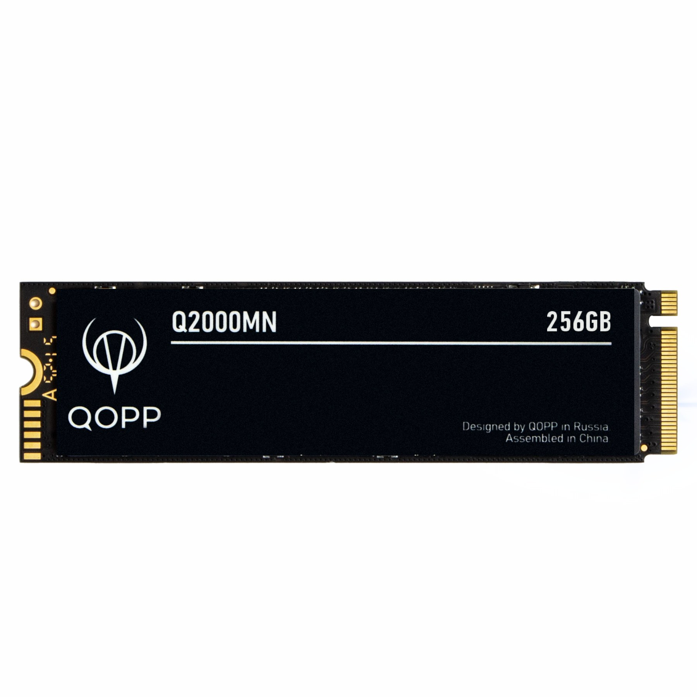

Внутренний SSD · NVMe 3.0
Q2000MN
M.2 2280 · PCIe 3.0 ×4 · 256 ГБ
- Скорость чтения, до
- 2 500МБ/с
- Гарантия
- 5лет
5 лет или до достижения ресурса TBW, смотря что наступит раньше. Условия гарантии
Характеристики
- Модель
- Q2000MN
- Объём
- 256 ГБ
- Интерфейс
- PCIe 3.0 ×4, NVMe
- Форм-фактор
- M.2 2280
- Ключ разъёма
- M
- Контроллер
- Phison / SMI
- Тип флеш-памяти
- TLC (Micron / Samsung / SK hynix)
- Скорость чтения
- до 2 500 МБ/с
- Скорость записи
- до 1 900 МБ/с
- Ресурс записи
- 160 TBW
- Время наработки на отказ
- 2 000 000 ч
- Размеры без упаковки
- 80 × 22 × 3 мм
- Вес
- 16 г
- Гарантия
- 5 лет или до достижения ресурса TBW
Скорости указаны для выбранной модели и объёма. Фактическая скорость зависит от конфигурации устройства и условий использования. Вариант контроллера и памяти зависит от партии.
Гарантия заканчивается по истечении срока или достижении ресурса записи, смотря что наступит раньше. Подробнее о гарантии